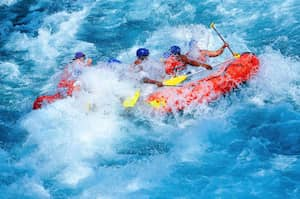
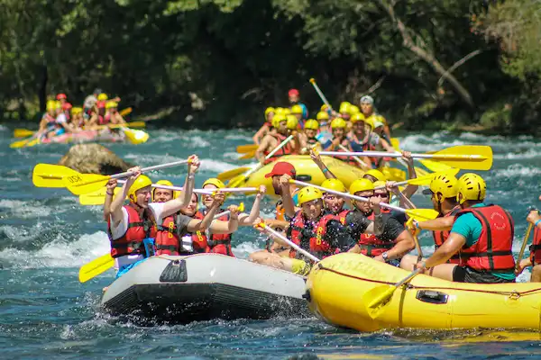
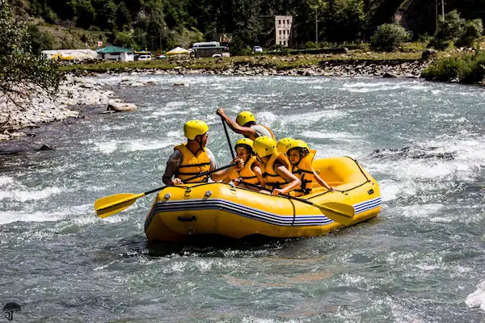

Trips
Loa Rafting offers three types of adventures tailored to each client's needs and rafting experience, covering various levels of adrenaline. We invite you to experience an adrenaline fueled adventure with Rafting Loa in Pucón, navigating local rivers alongside expert, qualified guides. Come and enjoy a unique, unforgettable adventure packed with excitement and adrenaline—as you traverse the Trancura and Liucura rivers, with a constant focus on safety and the use of specialized equipment.
Our Rafting Trips

Enjoy an entertaining rafting excursion on the spectacular and famous Trancura River in Pucón, featuring a safe and fun descent led by accredited professionals.
Read More
On this advanced-level stretch, you can fully experience the thrill of the rapids and enjoy a stunning setting that includes exceptional views of the Villarrica Volcano. The package includes full gear (maintained under strict hygiene standards), round-trip transportation, insurance, access fees, certified guides, and a photography service. The experience lasts 2 hours and 30 minutes, and the minimum age for this adventure is 15. The activity focuses on a fun, safe descent suitable for everyone; IMPORTANT NOTE: prior experience, strong swimming skills, and good physical condition are required (there is a high probability of falling into the water, which adds to the adrenaline of the trip).

Enjoy an entertaining rafting excursion on the spectacular and famous Trancura River in Pucón, featuring a safe and fun descent led by accredited professionals.
Read More
On this intermediate-level stretch, you can experience the thrill of the rapids and admire beautiful scenery, including privileged views of the Villarrica Volcano. The package includes full equipment (maintained to high hygiene standards), round-trip transportation, insurance, access fees, certified guides, and a photography service. The experience lasts 2 hours and 30 minutes, and the minimum age for this adventure is 8 years old. The activity focuses on a fun, safe descent suitable for everyone; no prior experience is required.

An excursion specially designed for families to experience an exciting adventure and enjoy a safe, fun rafting trip down the crystal-clear waters of the Liucura River.
Read More
Set in a beautiful location with views of the Villarrica, Lanín, and Quetropillán volcanoes, the river offers a basic difficulty level suitable for children, ensuring both safety and fun under the supervision of professional, accredited guides. The package includes full equipment (maintained under strict hygiene standards), round-trip transportation, insurance, access fees, certified guides, and a photography service. The experience lasts 2 hours and 30 minutes, and the adventure is suitable for the whole family. The activity focuses on a fun, safe descent that everyone can enjoy.
Our Rafting Trips
| Trip | River | Difficulty | Minimum Age | Time |
|---|---|---|---|---|
| Trancura expert rafting | Trancura (Upper) | High | 15 | 2:30 Hours |
| Trancura rafting Beginner | Trancura (Lower) | Moderate | 8 | 2:30 Hours |
| Liucura rafting family | Liucura | Low | all Family | 2:30 Hours |
Are you ready to schedule your rafting adventure?
Contact us to schedule your next rafting adventure.The experience is almost within reach...
Contact us!